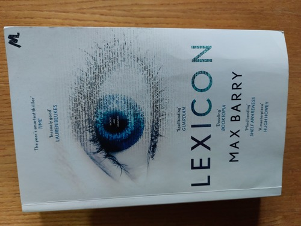

Posted on Dec 16, 2022
Peccato! Il soggetto sarebbe interessante e avrebbe grande potenziale, ma invece di essere scritto come un romanzo, è scritto pensando alla sceneggiatura di un film aMMericano: ci sono i soliti stereotipi che, in definitiva, mi hanno infastidito.
